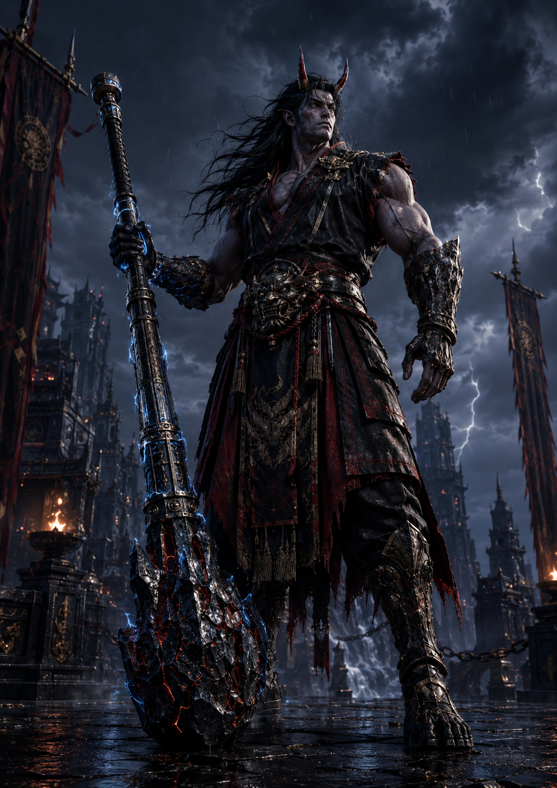

Stage I
The Island Warlord
Before the contract, Raizhen is a product of island violence. His authority comes from size, weapon skill, endurance, and the ability to survive in a clan culture where weakness has no political value.
He is not evil for the sake of evil. He is a brutal ruler shaped by a brutal system: territory, challenge, victory, submission, and strength made visible.